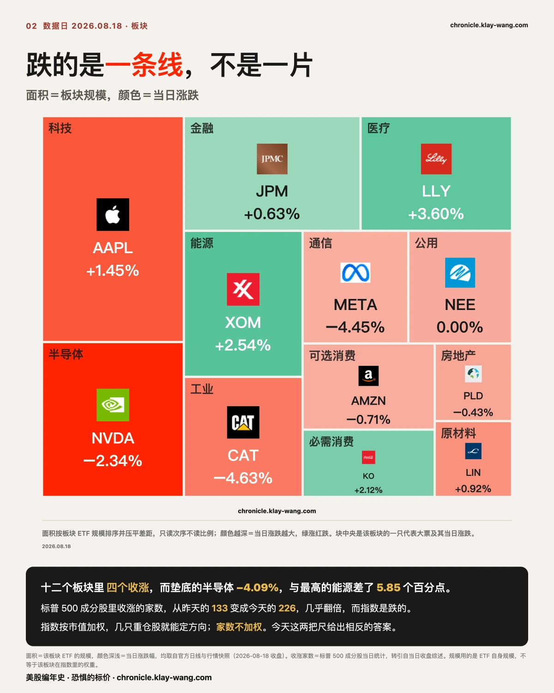
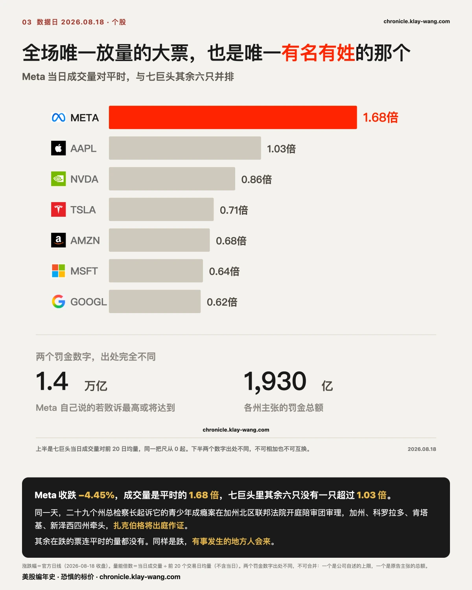
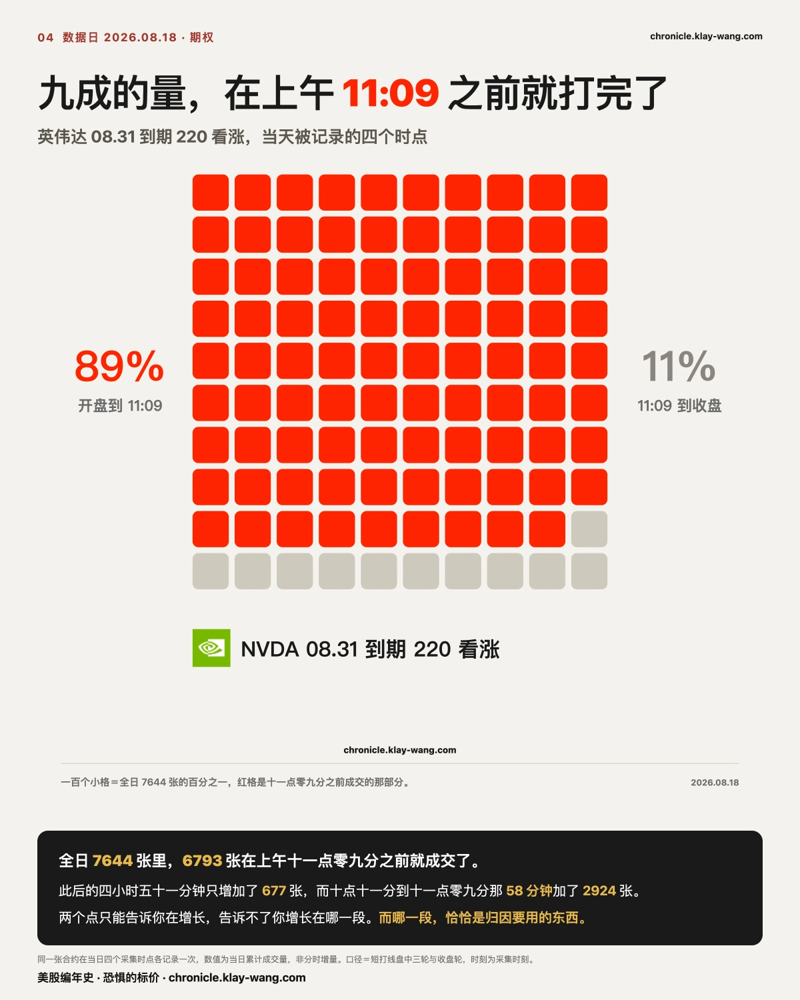
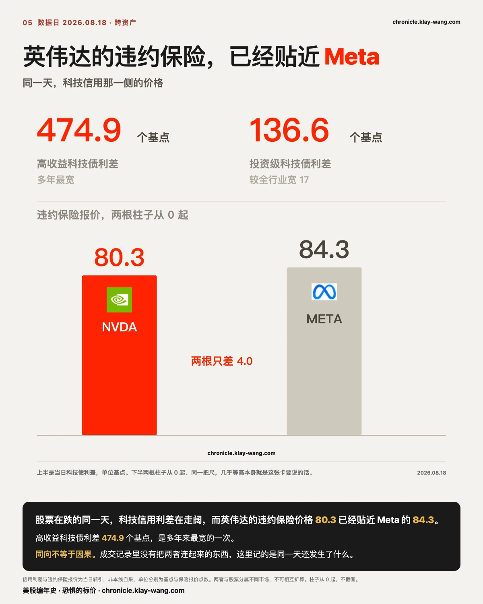
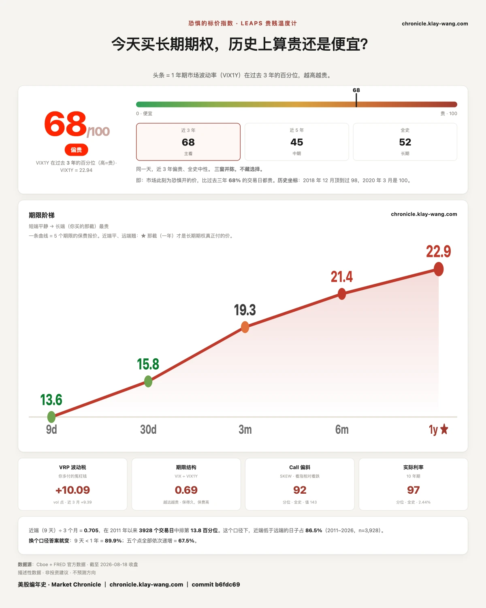

为什么七巨头全部收跌？而涨得最猛的是存储？ · 8.17-8.21
⚡ 三行速览
半导体 ETF 收跌 4.09%，存储四只加英特尔全部跌超 6.5%，最深的希捷跌 9.16%。同一天，这五只的成交量没有一只到平时的 1.2 倍，最深的希捷只有 0.84 倍。
跌幅是量能的好几倍：跌 9% 的票只多成交一成，而涨 0.27% 的微软只有平时的 0.64 倍。全场唯一显著放量的是 Meta 的 1.68 倍。
英伟达一张八月底到期的看涨合约，全天成交七千六百四十四张，其中九成在上午十一点零九分之前就打完了，此后近五小时只增加了六百多张。
这一期讲什么
今天很容易被写成资金大举撤出科技。数据不支持这句话。
撤出是一个动作，动作要留下成交。跌 9% 的票只比平时多成交一成，这个比例配不上那个跌幅。恐慌性抛售的样子是量能翻倍，今天没有一只票是那个样子。
跌 9% 而成交量只有平时的八成，这不是恐慌该有的样子。恐慌是放量的。今天更像是报价一层层往下让，而没有人在下面接。

〔横截面〕跌幅是量能的好几倍
先看结果这一层。
| 涨跌 | 成交量对二十日均量 | |
|---|---|---|
| 希捷 STX | −9.16% | 0.84 倍 |
| 闪迪 SNDK | −9.01% | 1.08 倍 |
| 西部数据 WDC | −7.43% | 1.12 倍 |
| 美光 MU | −7.02% | 0.89 倍 |
| 英特尔 INTC | −6.58% | 1.02 倍 |
五只票跌幅在 6.58% 到 9.16% 之间，而量能最高的西部数据也只有 1.12 倍，跌得最深的希捷反而只有 0.84 倍。跌幅是两位数，量能的增幅是一位数。
这五只不是全市场跌得最惨的。同一天费城半导体指数跌 6%，是七月二十九日以来最大单日跌幅；跌得更深的在观察名单之外，光通信里的应用光电跌 15.16%，AI 云里的 CoreWeave 跌 12.10%。所以下面这张图讲的是存储这条线，不是当天的跌幅榜。
板块层同样：科技 XLK 跌 2.47%，量能 1.05 倍；半导体 SMH 跌 4.09%，量能 1.03 倍。指数基金里只有纳指基金 QQQ 的 1.25 倍明显高于平时，标普基金 SPY 是 0.95 倍。
七巨头三绿五红。苹果涨 1.45%，是唯一有正常成交支撑的绿（1.03 倍）；微软涨 0.27%、谷歌涨 0.06%，量能却只有 0.64 倍和 0.62 倍。这两只不是被买上去的，是今天没人动它们。
红的一边，Meta 跌 4.45% 配 1.68 倍量能，是七巨头里唯一显著放量的一只。
今天不是撤出，是接盘的人先走开了。 一笔卖出要成交，必须有人在另一边买。跌幅两位数而量能只多一成，说明卖压本身并不比平时重，重的是买盘的缺席。价格是在薄的盘口上滑下去的，不是被大量抛压砸下去的。
推翻它很简单：明后天同样的跌幅上量能跳到 1.5 倍以上，那就是真正的抛压今天还没出手。
今天并非全市场都在缩量：三十二个观察对象里十三个在均量之上，纳指基金 1.25 倍、博通 1.24 倍、西部数据 1.12 倍。站得住的不是全市场缩量，是跌得最狠的那条线没有放量。
量能倍数＝当日成交量 ÷ 前二十个交易日的日均成交量（不含当日），源＝官方日线。
盘中折算的量能倍数会系统性高估：它把已过时段的量按时间比例外推，默认成交在一天里均匀分布。今天的量集中在早盘、午后枯竭，所以任何上午做的外推都偏高。全日实测才作数。

〔期权〕一张合约九成的量，在上午十一点前就打完了
英伟达 2026-08-31 到期、行权价 220 的看涨合约，今天在四个时点各被记录一次。
| 时刻 | 累计成交 | 该段增量 | 用时 |
|---|---|---|---|
| 10:11 | 3,869 | — | — |
| 11:09 | 6,793 | +2,924 | 58 分钟 |
| 11:30 | 6,967 | +174 | 21 分钟 |
| 16:21 | 7,644 | +677 | 291 分钟 |
九成的全日成交量在上午十一点零九分之前就打完了。此后的四小时五十一分钟，只增加了六百七十七张。
只看 3,869 和 6,967 这两个点，形状是一路累积。加上收盘那个点，形状变成上午集中打完、午后收手。
两个点只能告诉你在增长，告诉不了你增长在哪一段。 而哪一段恰恰是归因要用的东西。
还有一个细节值得留意：权利金在十一点零九分是 518 万美元，到十一点半反而降到 484 万，而同期成交量还在涨。同一张合约成交在增加而权利金在减少，意味着中间的成交价在下行。

〔期权〕今天最重的六个价位
按名义权利金排，今天短打线上最重的六个价位：
| 标的 | 合约 | 成交量 | 持仓 | 名义权利金 |
|---|---|---|---|---|
| 英伟达 | 08.28 220 看涨 | 13,831 | 16,714 | 941 万美元 |
| 闪迪 | 08.28 1700 看涨 | 1,179 | 386 | 811 万美元 |
| 美光 | 08.28 1000 看涨 | 3,901 | 1,751 | 763 万美元 |
| 闪迪 | 08.28 1600 看跌 | 840 | 367 | 713 万美元 |
| 英伟达 | 08.28 232.5 看涨 | 27,284 | 3,456 | 688 万美元 |
| 美光 | 08.28 935 看涨 | 1,547 | 238 | 673 万美元 |
六笔全部落在 2026-08-28 这一个到期日上，也就是十天后。
最重的那个价位和最像新仓的那个价位，不是同一个。 英伟达那张 220 看涨名义 941 万，是当天最大的一笔，但它的成交量 13,831 张压在 16,714 张的原有持仓上，比值 0.83，这更像是在一个本来就重的价位上换手，而不是新开的仓。闪迪那张 1700 看涨名义 811 万，成交 1,179 张对 386 张持仓，形状上更像新建的仓位。
这批合约里有几条成交量对持仓的比值高得吓人，但那个比值今天不成立：持仓量是昨夜结算的，今天新开的仓一张都没进分母，成交量越大它越大。一个分母停在昨天的比值，量的不是今天。
本周五 08.21 的月度到期不在今天的采集窗口内。那一档今天没有数，而这跟那里什么都没发生，是两回事。
〔对账〕前几期挂出来的四笔账，逐条给结果
博通的期限倒挂：从 1.38 走到 1.44，六个交易日里最宽的一次。
上一期挂的问题是 1.38 之后往哪走。答案是继续走宽。序列是 0.29、0.30、0.78、0.85、1.38、今天 1.44。更值得记的是另一件事：今天十九只票里，只剩博通一只还倒挂，排在它后面的 SpaceX 已经是 −0.84。一个月的波动率报价比一年还贵这件事，现在是它一个人的事。
SpaceX 的倒挂只待了一天。
上一期它从 −3.23 翻成 +0.66，当时挂的推翻条件是：明天收回去就只是单点。今天 −0.84，收回去了。那一次不能再算作第二只倒挂。博通与 SpaceX 的倒挂不同源，这条因此立住了：博通那条已经连着六天，SpaceX 那条一天就消失了。
存储是不是开盘前定死的，答案是一半一半。
判据是把当日涨跌拆成跳空段和白天段。今天美光跳空 −5.40、白天 −1.71、全天 −7.02，跳空占了 77%；闪迪跳空 −6.12、白天 −3.09、全天 −9.01，跳空占 68%。昨天美光是 69%，闪迪只有 41%。美光两天都成立，闪迪昨天白天做得比跳空还多，不成立。这条判断部分成立。
另一件事：两天的跳空段和白天段都是同号，昨天双正、今天双负。同一个形状，两天完全相反的方向。
Reddit：消息在公告那天就被定价完了。
公告日 08.14 跳空 +11.17 个百分点，全天 +12.63，也就是说白天只走了 1.31。今天是正式生效日，跳空只有 +0.97，全天 −3.80。该发生的在公告那天已经发生完了，生效日本身没有带来新的价格。

〔个股〕全场唯一有名有姓的催化剂，也是唯一显著放量的大票
Meta 今天跌 4.45%，量能 1.68 倍，是七巨头里唯一显著放量的一只。它也是今天唯一一只能指到具体事件的票。
八月十八日，美国二十九个州总检察长起诉 Meta 的青少年成瘾案在加州北区联邦法院奥克兰分院开庭陪审团审理，指控其设计 Facebook 与 Instagram 诱导青少年成瘾。
两个罚金数字必须分开看，它们的出处完全不同：
- 1.4 万亿美元：这是 Meta 自己说的，若败诉罚金最高或将达到这个量级，接近其当前总市值。
- 约 1,930 亿美元：这是各州主张的罚金总额，由加州代理律师透露。报道拿它对标 1988 年各州与烟草企业 2,060 亿美元的和解案。
Meta 方面反驳称指控缺乏依据、金钱索赔严重失衡。
盘面上它日内曾从低位回升，十点十分 548.27，十二点三十二分 550.33，收盘 544.50，收在当日偏低的位置。
这是今天唯一一只有人愿意为它多花成交的大票。 其余在跌的票连平时的量都没有。同样是跌，Meta 的跌有人参与，存储那五只的跌没有。这两种跌不该被写成同一件事。
〔广度〕指数在跌，而上涨的家数几乎翻倍
标普 500 的成分股里，今天有 226 只收涨。昨天只有 133 只。
上涨家数几乎翻了一倍，而同一天指数是跌的。
这跟前面那几段是同一件事的另一种量法，而且是更硬的一种：它数的是家数，不是权重。 指数按市值加权，几只权重股就能把方向定下来；家数不会撒谎，它告诉你参与的面到底是宽是窄。今天的答案是：面在变宽，而指数被少数几只重仓股拖着走。
医药那一侧同时在创新高，强生收在历史新高，礼来、施贵宝、福泰接近历史高位。这不是一个所有东西都在跌的日子。
〔传导〕债市怎么把压力传到芯片股
这条链今天完整可见，四步，每一步都有当天的价格：
第一步，AI 的钱越来越多是借的。 今年迄今与 AI 相关的债券发行 4,890 亿美元，是去年全年估计（3,220 亿）的一倍半。八月一个月的投资级发行 1,452 亿，创下同月纪录。
第二步，借的钱开始变贵。 高收益科技债利差走到 474.9 个基点，是多年来最宽的一次；投资级科技债利差比全行业平均还宽 17 个基点。
第三步，债市开始给 AI 单独定价风险。 英伟达的违约保险报价 80.3，已经贴近 Meta 的 84.3。
第四步，最依赖借钱的那批先挨打。 费城半导体指数跌 6%，存储跌 7% 到 9%，而靠发债扩张的 AI 云里 CoreWeave 跌 12.10%。
用一句大白话说完：AI 的钱以前是公司自己赚的，现在越来越多是借的。借的钱有价格，今天债市把这个价格调高了，股市里最依赖借钱的那批最先挨打。
同一天，30 年期美债盘中收益率摸到 5.3371%，是 2007 年 6 月以来最高，收盘回落到 5.2858%；10 年期盘中 4.7478%，收 4.7060%。下午的两个坏数据（7 月新屋开工环比 −12.4%、成屋签约 −2.3%）把收益率从高点压回来约 5 个基点。
这里有一个值得停下来想的数：无风险的钱现在能拿到 5.3%。 意思是股票上的每一分风险，都得挣得比这个多才划算。
政府这一侧的规模也在往同一个方向推：7 月单月财政赤字 4,323 亿美元，是 2021 年 3 月以来最高；美国国债总额距离 40 万亿只差 650 亿；而过去十二个月的利息支出已经 1.4 万亿，即将超过社保，成为联邦最大的单项支出。

〔跨资产〕同一天，另一个市场也在动
同一天，科技信用那一侧出现了一批可核的报价：
| 当日读数 | |
|---|---|
| 高收益科技债利差 | 474.9 个基点，多年最宽 |
| 投资级科技债利差 | 136.6 个基点，比全行业均值宽 17 个基点 |
| 英伟达信用违约保险 | 80.3，几乎追平 Meta 的 84.3 |
股票在跌的同一天，科技信用的价格在走阔，而英伟达的违约保险价格逼近 Meta。两个市场同时在动，而且两边都有可核的报价。
同向不等于因果。 债务担忧和存储下跌在同一天出现，成交记录里没有把两者连起来的东西。这一节记的是同一天还发生了什么。
〔视野〕这不是一个市场的事
存储这条线不只在美股。今天 SK 海力士在韩国跌超 9%，与闪迪 −9.01%、西部数据 −7.43%、美光 −7.02% 同向。
全市场跌幅前三与科技无关也不小：Klarna 跌 22.81%（成交额 5.3 亿美元，年内 −47.9%）、Fabrinet 跌 19.38%（15.3 亿美元，年内 +6%）、世纪互联跌 16.92%（1.1 亿美元，年内 −22.2%）。
指数层面：纳斯达克综合指数跌 1.33%，年内仍 +13.1%；标普 500 跌 0.69%，年内 +12.4%；道指跌 0.22%，年内 +11%。
纳斯达克综合指数的 −1.33% 与纳指基金 QQQ 的 −1.69% 是两个不同的指数，前者是综合指数，后者跟踪纳斯达克 100，别混着引用。

〔大盘 · 恐惧的标价〕68.4，比昨天低了一点
今天读数 68.4，昨天 69.7。一年期的波动率报价从 23.04 落到 22.94。
在一个半导体跌 4% 的日子里，长期保险的价格几乎没动，甚至还便宜了一点点。这就是前面那条判断在另一把尺上的样子：如果今天是恐慌，一年期的保险不会比昨天便宜。
五档从近到远是 13.59、15.84、19.27、21.37、22.94，仍然是完整的向上斜坡。近端比昨天抬了一些，远端几乎没动，斜坡因此变平了一点。
今天值得带走的三句话
跌得最深的五只票，量能没有一只到平时的 1.2 倍。跌幅是两位数，量能的增幅是一位数，这两个数配不上。
微软和谷歌今天收绿，量能却只有平时的六成出头。它们不是被买上去的，是没人动它们。
一张合约九成的成交量在上午十一点零九分前就打完了。两个点只能告诉你在增长，告诉不了你增长在哪一段。
预告与下一期回访
下一期回来对四件事：博通那道倒挂在 1.44 之后还能不能继续走宽，以及它会不会一直是十九只里唯一的一只；今天缩量下跌的形状明后天会不会转成放量；本周五 08.21 月度到期上，谷歌两档看跌、SpaceX 十六个价位、美光看涨阶梯、闪迪 1600 上下两侧会收成什么样；以及八月二十六日英伟达财报前的留痕窗口从 08.21 开启。
期权页每个交易日更新，昨天的钱今天还在不在那一章可以逐日翻。
本站不提供投资建议，不预测方向，不做择时。